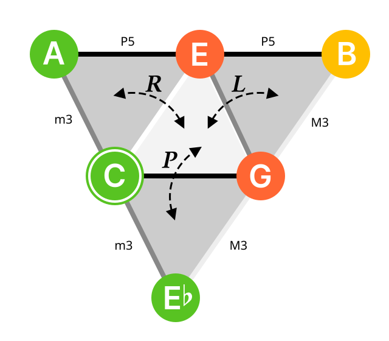
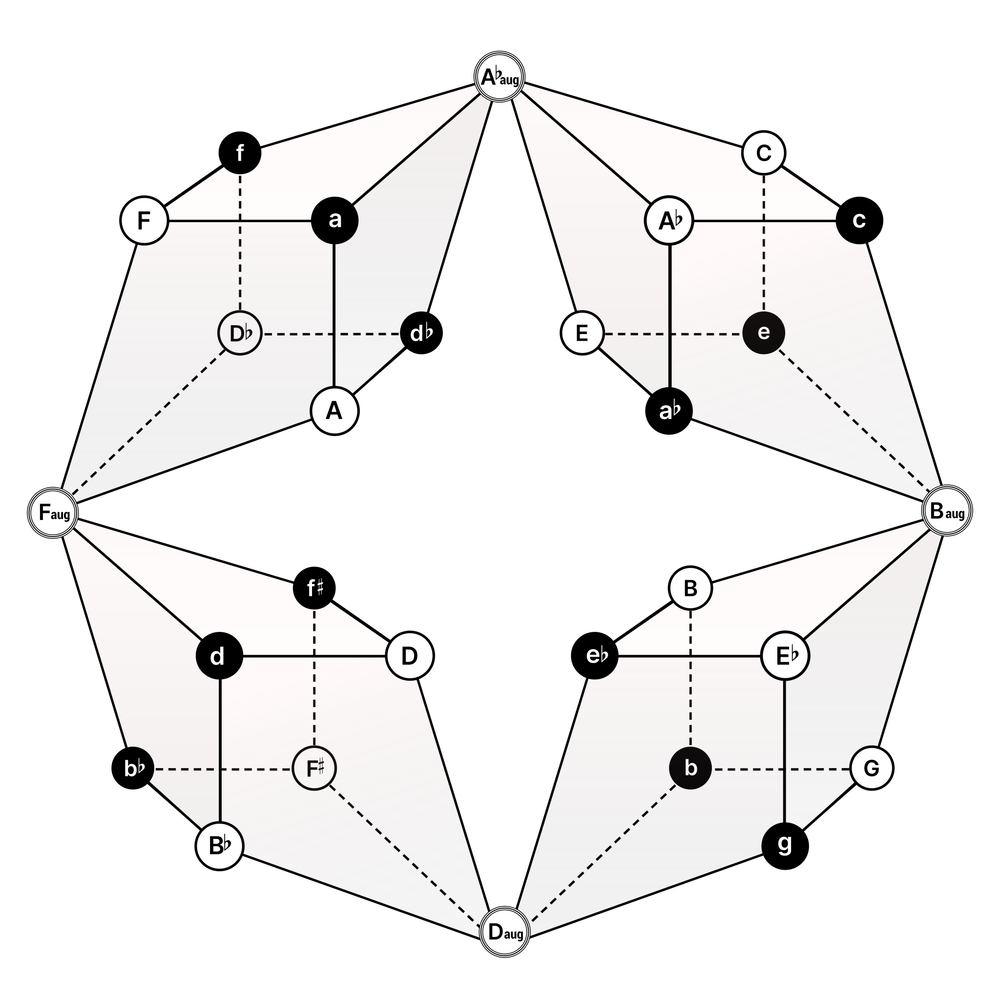
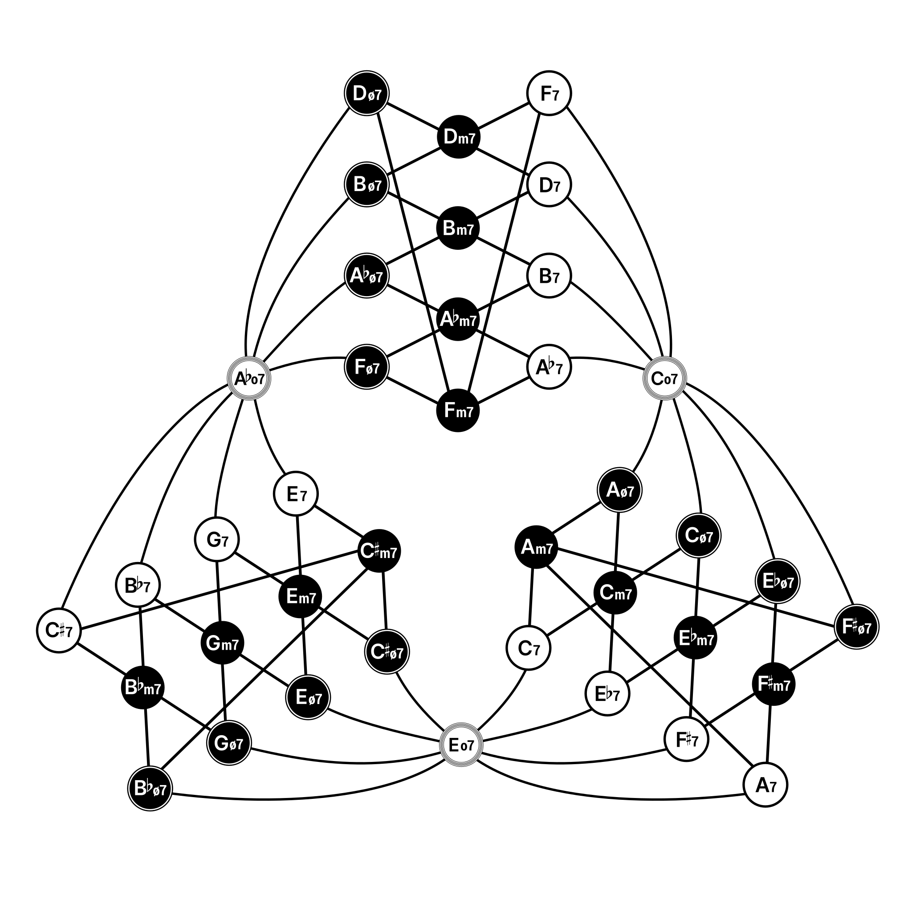
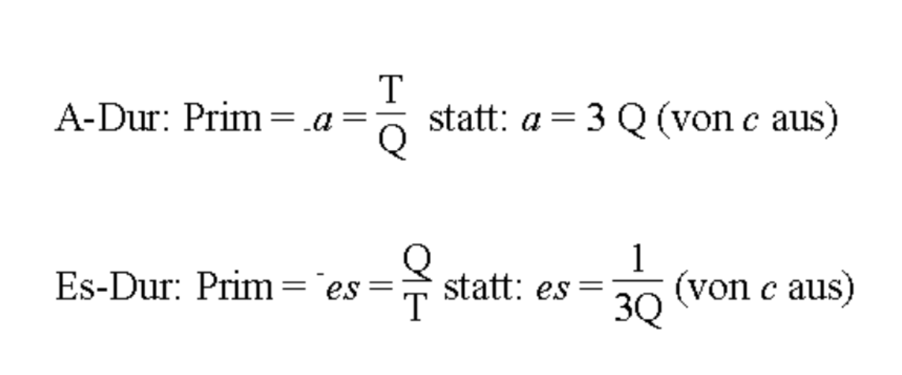
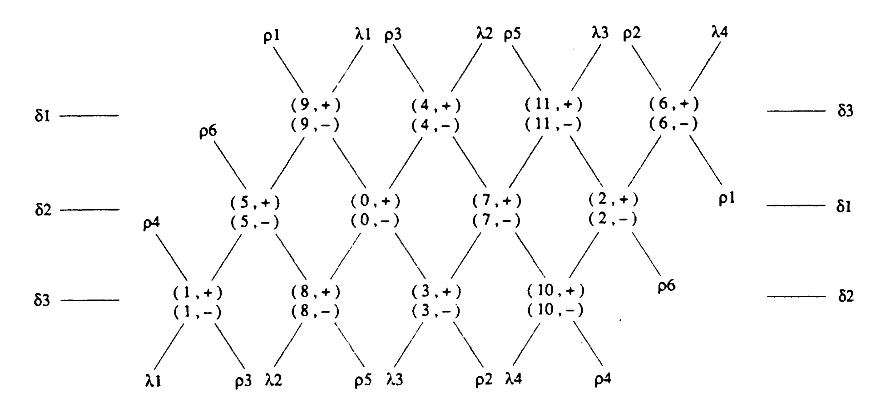
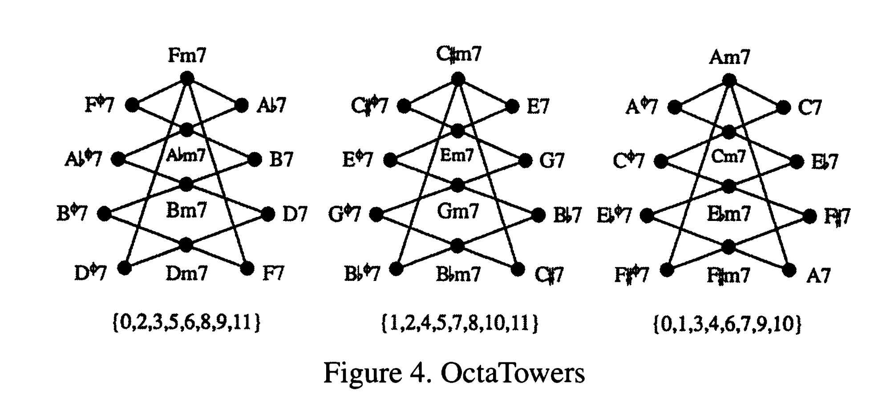
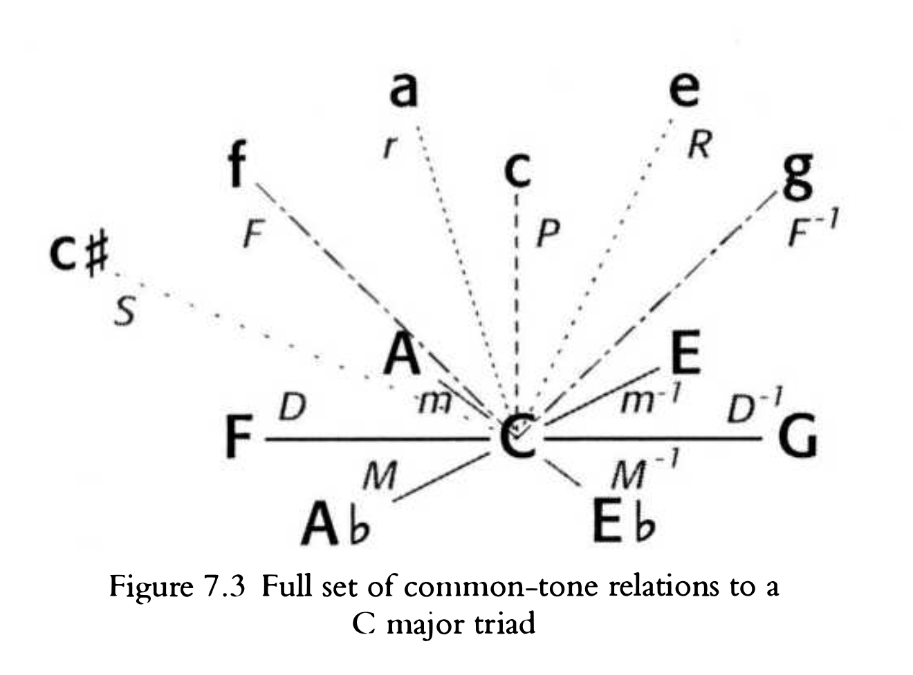
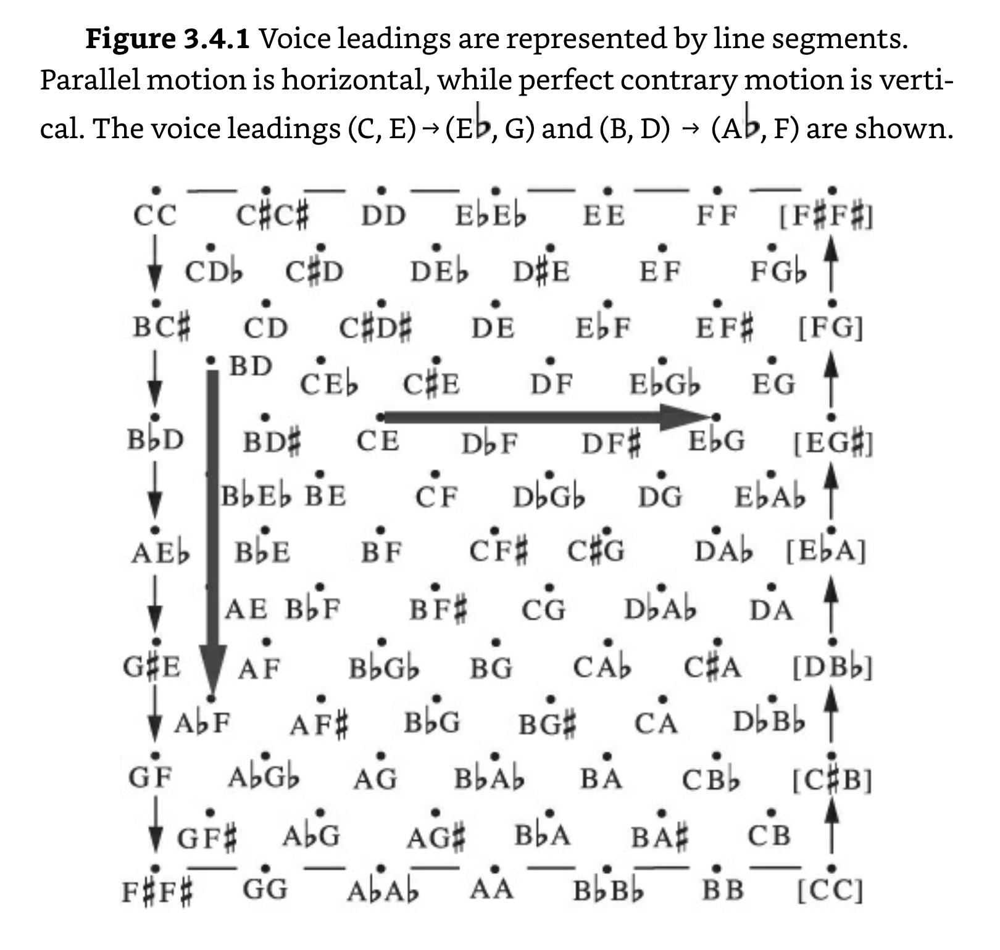
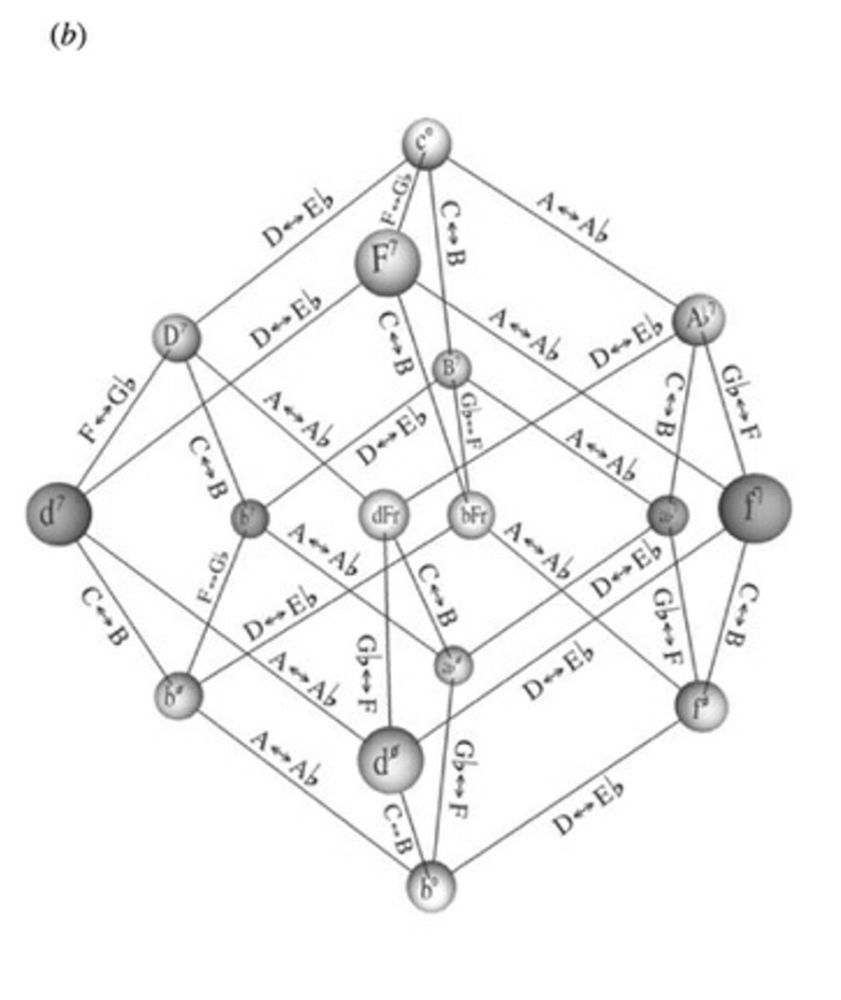
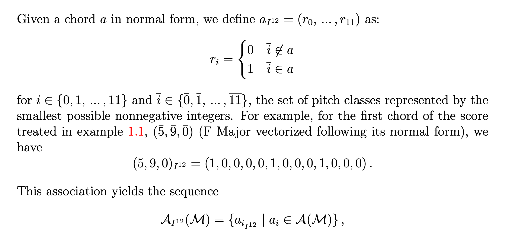

在上一篇中，我们介绍了新里曼理论的基础要素。其中最为知名的是“PLR 操作”与“音网（Tonnetz）”……


与此同时，仍然极具深挖价值的，还有“六音环（Hexatonic Cycle）”。

这本身不过是用 LP 操作将6个和弦连成的一个圆环，但其本质是在做这样一件事：“有规律地重复差的和弦变换，串联成链，最终回到原和弦”。这样的图表显然还可以构建出许多种。 操作模式并不局限于 LP，可视化的方法除了圆环之外也有各种可能，和弦种类更没有限定在大三和弦与小三和弦上。这里仍然蕴藏着无限的可能性。
 1. 立方体之舞（Cube Dance）
1. 立方体之舞（Cube Dance）
此前我们一直将“基本 PLR 操作”三者并列，但实际上其中存在一个异类。
 “这里面混进了一个叛徒哦～”
“这里面混进了一个叛徒哦～”
毋庸置疑，它就是唯一伴随位移的 R 操作。在以“声部进行的俭约性”为核心关键词的变换理论中，这一差距是相当巨大的。在实际问题中，六音环也将 R 操作排除在外。
引入增三和弦（aug）
说得更直接一点，正因为 R 的存在，我们反而忽视了一种变换。将根音移动半音的是 L，将三音移动半音的是 P；那么将五音移动半音的操作又当如何呢？

C⇄Caug 的变换。如果暂且将以大三/小三和弦为基础的自然调性音乐观搁置一旁，这种变换才真正是应当与 L、P 操作平起平坐、具备同等俭约性的变换操作。
aug 的特异性
而且增三和弦（aug）还具备一项至关重要的特性：各个和弦音之间呈等距离分布，根音可以有3种不同的解读方式。Caug 等同于 Eaug 和 A♭aug。由此我们会发现一件事：不仅是 C，E 和 A♭ 的五音分别升高半音也能得到 Caug。而提到 C、E、A♭，恰恰就是刚才六音环中登场的3个和弦。换句话说，六音环中所使用的3个大三和弦，通过五音的变形，最终都汇聚到了同一个增三和弦之上！

（后续遵循该学说论文中的表示方法，大和弦用大写字母表示，小和弦用小写字母表示。这样也不必担心“+”与 aug 发生混淆。） 这显然是一个具有趣味拓展潜力的事实。其结构宛如“从上野去涩谷，既可以绕山手线大半圈，也可以坐银座线直线贯穿”。通过引入 aug 这一全新和弦类型，六音环系统有望发展得更加丰富精深。
min 与 aug 的关系
另一方面，小三和弦（min）与增三和弦（aug）之间又是什么关系呢？按通常思路，连接这两个和弦需要升高三音同时升高五音，似乎需要“两步”；但事实并非如此。实际上存在一条仅需“一步”即可将这两类和弦连接起来的捷径。那就是将根音下移半音的变换。

这是小调低音进行线条（Bassline Cliché）中经常见到的经典动向！如谱所示，aug 与大三、小三和弦都仅差一个音的紧密关系，其实我们日常早已熟练运用。传统理论以根音为第一优先，很少深入探讨这种关系；然而在以共同音为第一优先的新里曼理论中，在此发掘出了巨大的潜能。 如同对大和弦的处理一样，考虑到根音的置换，c、e、a♭ 这3个小三和弦只要将根音降低半音，全部都会变成 Baug。也就是说，六音环中的3个小和弦成员，也同样在一个（与大和弦不同的）aug 和弦上汇合了。

立方体化
3个大三和弦、3个小三和弦、2个增三和弦，共计8个和弦。它们通过将根音、三音或五音向特定方向移动，各自能变形为这8个中的另外3个不同和弦，构建出了一个致密的网络。8个“点”，每个点延伸出3条“线”彼此互联……在考虑将其可视化时，最理想的图形无疑就是立方体（Cube）。

立方体的8个顶点各自连接着3条棱，用来表达上述关系再合适不过了！虽然原本平滑的六音环因此变得折叠曲折，但立体化带来的收益远超于此，这点代价是完全值得的。 极其有趣的是：在这个立方体中，向 X 轴（右）方向移动在任何一条棱上都代表构成音 g 变为 a♭ 的变换；向 Y 轴（上）方向移动代表 b→c；向 Z 轴（纵深）方向移动代表 e♭→e。从这张图中仿佛能让人孕育出“aug 是一切和弦的生成源泉”这样带有哲学美感的理论，令人感受到十足的浪漫。 将“超六音系统”的4个圆环全部改造成立方体，如下图所示：

（此处等音拼写遵循了参考文献论文中的图示。） 至此，8×4=32个和弦似乎被整合到了一张图里……但仔细观察就会发现事实并非完全如此。注意每个立方体中的 aug，会发现其中存在重复。B、A♭、F、D 的 aug 分别出现了两次。 这也顺理成章：一个特定的 aug 和弦在连接3个大三和弦的同时还连接着3个小三和弦，它仅凭自身就与多达6个和弦仅差半音。因此在一个立方体中与大三和弦连接的 aug 并没有完成使命，在另一个立方体中它还要承担与3个小三和弦连接的工作。 如此一来，在图示中出现重复的和弦显然不够优美。既然到了这一步，唯有一不做二不休——将立方体合并！
结合立方体
通过对立方体进行微调形变，将重复的 aug 像胶水粘贴边一样贴合起来，就能再次将4个立方体串联成圆环结构。


这就是最终形态！将4个立方体拉伸并粘合而成的图示，以**立方体之舞（Cube Dance）**之名闻名遐迩[1]。拥有3种根音解读方式，因而能与6个和弦携手相连。aug 在此真正做到了“三面六臂”，展现出阿修罗般惊人的连接能力。请务必在乐器上弹奏确认这些和弦确实都仅有一音半音之差。
立方体之舞改良版
上述图表是直接参考论文绘制的，但如果将整个立方体适度微调扭曲，让所有对边保持平行，或许能更直观地把握与 aug 的距离感以及各项操作的共性。

如果把它想象成绷紧的立方体可能让人感到些许视觉压迫，但若将其视为某种水晶簇，便能以平缓的心境来欣赏它。 在改良的同时也补充了细节信息：在每个立方体内部彼此平行的棱代表相同的音高变化，这一性质即使在拉伸立方体后依然保持；而且在整体循环中，顺时针移动始终对应构成音下行，逆时针移动始终对应构成音上行。 立方体之舞的每条棱都精确代表半音移动，因此从一个和弦到另一个和弦的位移量只需数一数棱的数量就能轻松测得，这是其巨大魅力所在。 此外，图示中自然包含了 aug，在构思运用 aug 的和弦进行时，也能够视觉化、直觉化地激发灵感。
借助立方体之舞让构思触手可及
例如，使用 aug 和半音进行的著名范例，莫过于瓦格纳的《女武神的骑行》（Ride of the Valkyries）。
歌唱家开口起唱的和弦赫然是 Baug，它首先解决到 E。过了一阵 Baug 再次登场，这次则走向了 C。 在分析上，用功能和声论完全可以解释：初次的 Baug 是通向 E 的属和弦 B 发生了五音“升变音”；第二次则是通向 C 的属和弦 G 同样发生了 aug 化并采用了第一转位。两者都是 D–T 的功能性进行，利用 aug 能够替换根音的性质，从单一的 Baug 和弦着陆到了 E 和 C 两个截然不同的目的地。 ……道理确实如此，但若要问自己能否写出这样的进行，门槛却显得相当高。然而若通过立方体之舞俯瞰半音连接网络，Baug 能够相对容易地连接到 C 和 E 的信息，在理论理解之前便率先直观映入眼帘。

我们甚至能立刻联想到：以同样的距离感也能走向 A♭；或者从 E 或 C 反向穿透到 A♭aug 从而跨越到对面的立方体等等。正如为五度进行和自然音阶音乐提供了丰富的视觉心智模型一样，立方体之舞能极大地辅助三度进行与共同音关系的想象。 新里曼理论目前主要被视作分析工具，但在创作层面，它所能带来的灵感启发丝毫不亚于“中心轴系统”。
2. 能量塔（Power Towers）
此前我们一直只针对三和弦展开讨论，但说到半音差的关系，对于七和弦也完全适用。它们之间同样被半音网络紧密联系着。

如果进一步把“平移根音”的变换纳入考量，那么在半减七（ø7）、小七（m7）、属七（7）这三类和弦之间可以构建出如下网络：

关键在于向右下方向的变换：将 Aø7 的根音抬高半音即成 Cm7 的第三转位；再将其根音抬高半音即成 E♭7 的第三转位。由此将根音相距小三度的和弦联系起来；由于小三度能够四等分八度的性质，沿着4种根音遍历一圈，最终又回到了最初的 Am7。 这里只出现了 C、E♭、F♯、A 这4个根音，因此同样可以构建连接 C♯、E、G、B♭ 的图，以及连接 D、F、A♭、B 的图。
八音塔（Octatonic Tower）
既然具有循环结构，本应将其做成循环图，但面对3列并排的现状要弯折成圆环相当困难。于是干脆从下往上将线条拉伸开来，形成类似于电波发射塔的结构。

虽然线条交错是一个小缺点，但整体结构显得非常规整紧凑。这一图示被称为八音塔（Octatonic Tower）[2]。 正如六音环的6个和弦仅由6个音符组合而成一样，八音塔的12个和弦也仅由8个音符组合而成；将这8个音汇集在一起，正是属减音阶（Dominant Diminished Scale，即全半/半全减音阶，H-W Diminished）。

请确认上图中塔楼里的12个和弦全部都可以由这8个音组合构成。 正因为是由8个音构成的塔，所以得名八音塔。C 的属减音阶由 Co7 和 C♯o7 两个 dim7 的和弦音构成。既然如此，把这两个减七和弦写入上述塔楼图中也完全合情合理。寻找与它们呈半音相连的和弦并构建网络……

就成了这样！半减七和弦降低七音自然变成减七和弦；而属七和弦升高根音同样会变成减七和弦。这在 V7→♯Vo7 这类经典进行中是大家熟知的常识。借助 dim7 特有的根音可换性，单个 dim7 得以与4个和弦相连。
结合各塔
行文至此，大家是否察觉到这与刚才的立方体之舞几乎是完全相同的剧本？在上图中 Co7 与半减七和弦相连，但它必然也与另外4个属七和弦相隔半音。那必然是属于另一座塔的成员，dim7 便成为连接两座塔的桥梁。将各座塔相互串联……


就呈现出了这幅壮观的图景！！与立方体之舞相同，dim7 与众多和弦呈半音相连的关系被清晰地可视化。这张图被称为能量塔（Power Towers）[3]。 在这一图示中，顺时针移动代表音高上行，逆时针代表音高下行，正好与前面的立方体之舞相反。从这个意义上说，将此图水平镜像翻转或许能与立方体之舞达成更好的视觉统一性。
融入大七和弦
此前作为基础和弦类型却一直被冷落的大七和弦（Major 7th），实际上也具备相当重要的特征：如 ♯IVø7→IVΔ7 所展现的那样，它可以通过半减七和弦降低根音相连。虽然缺乏 dim7 那样强大的汇聚性，但大七和弦依然具备充当塔间桥梁的最低能力。将其一并纳入图示中，虽然线条会产生交叉，但大体可以呈现为如下形态：
 （※此图为本文原创方案）
（※此图为本文原创方案）
虽然没有包含 aug7 或 mΔ7，但主要七和弦家族的半音差网络得以在二维平面上融为一体。此外，似乎也有人提议将介于 ø7 与 7 之间的“法兰西六和弦”加入该图中。 如上所述，视界涵盖哪些和弦、以何种连接为第一要义，不同的视角能够激发出丰富多彩的可视化尝试。在新里曼理论中，这类图表的构思与制作持续层出不穷，对和弦复杂网络的可视化探索，始终是新里曼理论中最炙手可热的前沿议题之一。
3. 音乐理论的数学化
最后探讨的新里曼理论议题，虽然与实践的关系相对较弱，但却极具学术深度：如何用更加数学化的方式来描述音乐理论。 这其实是早在“新”字之前的里曼本人就曾追求的方向，特别是在1916年的《音表象理论之构想》中，可以看到他尝试用数学运算来表达和弦变形。

Riemann, Hugo. Ideen zu einer ‘Lehre von den Tonvorstellungen’.其中 Q（Quint）代表“五度”，T（Terz）代表“三度”，乘法（分子）代表上行，除法（分母）代表下行。 这一段探讨的是：用音网视角的 T/Q（即“三度上行与五度下行的叠加”），来替代（statt）五度圈视角的 3Q（即“连续3次五度上行”）来观察从 C 大调看 A 大调的关系…… 在上一节中提到过将 D 操作的反向记作 D⁻¹，这类数学化的动作正是继承了里曼本人的遗志。 不过仔细看上面的式子，写成了 a=T/Q 这样用等号连接，左边是和弦，右边是和弦进行，显得有点不自然。究竟 Q、T 是指和弦的变形操作，还是对和弦本身的标记？界限较为模糊。把3个 Q 写作 3Q 而非 Q³，也透露出他仅仅将 Q 视作“五度”这一数量。这里充分展现出过渡期的特征——仿佛抓住了某种真谛，但尚未完全成型。 后世学者们评价他“对自己构想出了变换理论缺乏足够自觉”，大概正是指此类欠缺。里曼在这部著作出版3年后便以70岁高龄离世，让人不禁联想：若他能多活10年，或许他本人就能亲手建立起完整的变换理论，这实在令人惋惜。因此，继承其遗志、将这一构想推向更高阶段，便成为新里曼理论的核心议题之一。在此我们也简要介绍这部分偏向数学的内容。
音级（Pitch Class，音高类）
这不仅限于新里曼理论，在现代音乐理论中被广泛使用：不使用 ABC 音名，而是用 0～11 的数字来表示音，这被称为音级 / 音高类（Pitch Class，简称 pc）。
| 音名 | C | C♯ | D | D♯ | E | F | F♯ | G | G♯ | A | A♯ | B |
|---|---|---|---|---|---|---|---|---|---|---|---|---|
| pc | 0 | 1 | 2 | 3 | 4 | 5 | 6 | 7 | 8 | 9 | 10 | 11 |
音级是 ABC 音名的替代系统，与八度高低无关。也就是说，pc=7 高一个八度的音不会记为 pc=19，而是对 12 取模，同样记为 pc=7。 数字化使得音的关系能以纯数学方式被审视，更重大的意义在于它抹平了异名同音（等音）的区别。对于经常脱离具体调性语境进行讨论的新里曼理论而言，音级是非常便利的工具。 例如，音网也经常使用音级而非 ABC 音名来绘制：

Hyer, Brian. Reimag(in)ing Riemann.数字旁的 ± 是新里曼理论中表示大和弦/小和弦的记号，因此 (0, +) 代表 C 大三和弦。用数字表示音具有重大意义，除了使各类运算操作的描述更加规范外，还能避免诸如将 D 操作的 D 与音名 D 混淆的尴尬。
音级集合（Pitch Class Set）
像音阶那样由若干音级组成的集合，被称为音级集合（Pitch Class Set）。Set 在数学中就是“集合”的意思，这代表着将“子集”、“基数”等集合论术语直接引入音乐理论的尝试。 例如在“能量塔”中各塔所使用的属减音阶成员，便可以表示为如下数字集合：

Douthett, Jack. Steinbach, Peter. Parsimonious Graphs: A Study in Parsimony, Contextual Transformations, and Modes of Limited Transposition.音级集合通常用 {} 或 [] 包裹。看到 {0, 1, 3, 4, 6, 7, 9, 10} 这串数字，属减音阶“半全半全……”的音程间隔一目了然，也彻底避开了八声音阶令人头疼的等音拼写问题。
利用音级集合在数学层面上发展起来的理论被称为音乐集合论（Musical Set Theory），这是与新里曼理论分立的另一条理论分支。
广义音程系统（GIS）
新里曼理论先驱戴维·卢温在其1987年的著作中提出了广义音程系统（Generalized Interval Systems，简称 GIS），提倡将音程的描述方式升级为更加数学化、更严密的形态。引用其最基础的部分：
Given pitches s and t, int(s, t) is the number of scale steps one must move in an upwards-oriented sense to get from s to t. Thus int(C4, C4) = 0, int(C4,D4) = 1, int(C4,E4) = 2, and int(C4,C5) = 7. Int(C4, A3) = –2, since moving “–2 steps up” amounts to moving 2 steps down. …… This obviates a defect in the traditional measurements which tell us, for example, that a “3rd” and another “3rd” compose to form a “5th.” (3 + 3 = 5 ???)
对于给定的音高 s 和 t，int(s, t) 指的是从 s 向上移动到 t 所必须跨越的音阶级数（Steps）。因此 int(C4, C4) = 0, int(C4, D4) = 1, int(C4, E4) = 2, int(C4, C5) = 7。而 Int(C4, A3) = –2，因为‘向上进行 –2 级’等同于向下进行 2 级。（中略）由此可以消除传统度量方法中的缺陷——比如它告诉我们：一个‘三度’再加上一个‘三度’会组合成一个‘五度’。（3 + 3 = 5 ？？？）
Lewin, David. Generalized Musical Intervals and Transformations (p.16).
在这里，他挑战了用负数代替“下行几度”的表述，更重要的是试图解决困扰世人已久的“零距离 = 一度”的反直觉问题。虽然彻底取代现有体系极其困难，但像现在的“首调唱名法”一样形成一支坚挺的理论流派是完全可能的。 无论普及与否，拥有一套严格追求标准化的记法都是一件幸事。当必须使用以0为起点的音程度数记法时，只要注明一句“采用卢温的 GIS”，一切便严密自洽。卢温敢于向大家心照不宣妥协的缺陷举起反旗：“让我们这一代人从头重来吧！”，这也是其理论备受瞩目的原因之一。
PLR 操作的一般化
新里曼理论如今广泛用于半音阶化音乐的分析，但其核心的 PLR 操作骨子里却带有浓厚的自然音阶血统，以至于仅对源自 I-vi 的下行小三度（R）和源自 I-iii 的上行大三度（L）命名，这种状态在数学上显然不够优美。由于继承里曼遗志的大旗，似乎鲜有学者敢于触动这一核心；然而音乐学者戴维·科普（David Kopp）在其2002年的著作中大胆地对这一“圣域”动了手术。 他提倡根据根音位移量以及是否发生大/小调性质转换，对变换操作进行系统性命名：
| 名称 | 根音变化 | 大小调性质转换 |
|---|---|---|
| M | 下行大三度 | 无 |
| m | 下行小三度 | 无 |
| R | 下行大三度 | 有 |
| r | 下行小三度 | 有 |
| D | 下行纯五度 | 无 |
| F | 下行纯五度 | 有 |
规则规定所有操作以“下行”为第一基准，“上行”均以 -1 次方表示。M 取自 Mediant（中音）；F 源自 Fifth（五度，前述《音表象理论之构想》英译时将 Quint 译为 Fifth）。科普在此基础上加入 P 操作与 S 操作，将其确立为全部基础操作。

Kopp, David. Chromatic Transformations in Nineteenth-Century Music在这里，PLR 操作中“大小调操作不同、同一操作进行两次回到原点”的二元论世界观被彻底打破，机械与严密被置于首位。为了将其与此前具有自然音阶二元论色彩的体系相区别，科普将该理论命名为半音阶变换系统（Chromatic Transformation System）[4]。 告别拖着自然音阶包袱的 PLR 具有积极意义，但根据是否转换大小调而直接改变英文字母，在逻辑上似乎也不够优雅。既然已有用正负号表示大小调的惯例，大小调的转换直接用乘以负号来表示岂不更妙……这难免让人产生类似疑问。不过这也是20年前的著作，如今学界的讨论想必更加深入。
音乐几何学
既然用音网或立方体等几何图形来表达音乐，那么用更加严格的几何学来探讨音乐的浪潮也水涨船高。其中引人注目的代表作之一是德米特里·季莫奇科（Dmitri Tymoczko）的《音乐几何学》（A Geometry of Music）。 该书从类似卢温 GIS 的函数化基础操作起步（如将音高 p 升高 x 个半音的操作称为 Tx(p)），并在音网对单音与和弦移动图示化的基础上更进一步，尝试对两个声部的音程变动（声部连接）进行图示化。

Tymoczko, Dmitri. A Geometry of Music (p.74).这是一种将两音音高组合斜向排布构成坐标系、用线段表示声部连接运动的方法。故意采用斜向网格排布，其妙处在于：完全的平行移动（度数完全相等）呈现为纯水平线，完全的反向进行呈现为纯垂直线。该空间被命名为两音的和弦空间（Chord Space）。通过具备“长度”与“方向”两个参数的箭头来表示声部连接，使得声部连接的数值化与更深层的计算理论拓展成为可能。 既然双音坐标可以在二维空间中表示，那么三和弦的关系必然对应三维，四和弦也可以在四维空间中表达。书中展示了在表达四维空间的超立方体（Hypercube）顶点上按照能量塔模式放置和弦的图表。

Tymoczko, Dmitri. A Geometry of Music (p.106).若试图以三维直觉去理解这个立方体，空间扭曲感宛如在欣赏埃舍尔的错视画；但若纯粹聚焦于顶点与各棱，就会发现它与立方体之舞一样，严密地体现了“同方向的棱代表相同的音高变化”。 此外，该书还重新审视了“调性”的定义并提出了5大要素，提炼了和弦构成音的八度位移与重新排列等5种基础操作并取其首字母命名为“OPTIC”，展现出从基石层面重新构建理论的宏大志向。 若更加偏向数学，就会进一步踏入“集合论”与“拓扑学”等专业数学领域，那便真正进入了不再被称为新里曼理论的全新领地。

Alvarez, Alberto. Longoria, Pablo. A Framework for Topological Music Analysis (TMA)包括新里曼理论在内，这类高度数学化的音乐理论被统称为数理音乐理论（Mathematical Music Theory）。
4. 总结
通过两篇文章的探讨，大家不难发现，虽然统称为“新里曼理论”，其涵盖的内容与主旨却极其宽广。再次梳理其核心论题：
- 将和弦的变形操作符号化。
- 聚焦于共同音而非根音，从声部进行的俭约性出发探讨和声。
- 将单音与和弦的关系图表化，以几何方式探讨和声。
- 将音乐理论的各类要素公式化，以代数方式探讨音乐。
学者们相互引证文献不断激辩，即使在21世纪的今天它依然处于蓬勃的发展之中。
从里曼理论到卢温理论
由于新里曼理论在结果上与里曼原本的理论相去甚远，“新里曼”这一称谓常引来**对里曼之名的“挪用（Appropriation，擅用/私有化）”**的批评[5]。 例如从根本上说，里曼的“导音交换”确实是从 C 导出 Em，但其主旨在于指出由此产生的 Em 和弦是“假象的协和和弦”，与真正的 Em 并不相同[6]。而新里曼理论却单纯将导音交换用作“从 C 生成 Em 的变换”，确实有几分各取所需借名之嫌。
变换理论之所以被冠以“新里曼”之名，始于开拓者卢温在1982年的著作中将自己的研究称为“里曼系统”，但其命名理由仅是“与胡戈·里曼的精神与著作相关（associated with the spirit and work of Hugo Riemann）”，在这一阶段并未实质性地继承里曼的具体理论。他定义 PAR 和 REL 操作是在5年后的另一部著作中。鉴于此，熟悉里曼研究的学者西田纮子指出：
由此可见，卢温并非直接参考或引用里曼的著作，而是象征性地利用了里曼作为和声理论代表者的名望。（中略）对里曼之名及其概念的利用，在卢温那里起到了某种树立权威的作用，而且可以说这一策略取得了成功。
西田纮子. 从新里曼理论对里曼的接受看概念变迁 (p.10).
关于“是否不当利用了里曼之名”这一视角相当敏感，在各作者的字里行间常常能隐约窥见对此的斟酌。 例如前述的科普大胆废弃了导音交换的记号 L，但对此他先煞有介事地铺垫“虽然割爱令人惋惜”，并以“大调大写、小调小写是和弦界的悠久传统……”作为挡箭牌，最终声称自己才是对里曼后期理论的“意向与精神恪守忠诚”[7]。在此既能感受到改写前人研究的顾虑，也能看出声明自身未曾不当利用里曼的自白，甚至隐约显露出试图将自己确立为更正统继承者的隐秘“道统之争”。 无论如何，或许是意识到在理论发展中一直冠以里曼之名存在问题，科普本人提出了“半音阶变换系统”的新名称；而作为一个不问是否属于里曼谱系的更宽泛范畴，也存在着**变换理论（Transformational Theory）**的统称。 甚至在近年，学界干脆直接称其为 Lewinian Theory（卢温理论）[8]。卢温逝世已有20年，从40年前不得不借里曼之“威”，到如今理论直接冠以其自身之名传扬于世，令人深切感受到历史的积淀。 里曼虽然看似被当作了垫脚石有点可怜，但他本人也是站在豪普特曼（Hauptmann）和埃廷根等先驱的肩膀上才名留青史的，这本是音乐理论史上再正常不过的常态。或许再过40年，“卢温理论”之名将广为人知，终有一天会出现被冠以“新卢温理论”的学说。
谁做出了什么贡献的总结
将本文中登场的主要理论与人物大致梳理如下：
| 人物 | 主要贡献 | 代表文献 |
|---|---|---|
| Lewin（卢温） | 提出 GIS。将 PAR/LT/REL/DOM 定义为变换操作，并定义 S 操作。 | Generalized Musical Intervals and Transformations (1987) |
| Hyer（海尔） | 引入 PLRD 单字母缩写。在音网中引入音级（Pitch Class）。 | Reimag(in)ing Riemann (1995) |
| Cohn（科恩） | 指出变换理论中“声部进行的俭约性”的重要性。提出六音系统。定义 N 操作。发表大量著述。 | Maximally Smooth Cycles, Hexatonic Systems, and the Analysis of Late-Romantic Triadic Progressions (1996) / Audacious Euphony (2012) |
| Douthett & Steinbach（道瑟特与施泰因巴赫） | 介绍立方体之舞（Cube Dance）、能量塔（Power Towers）。 | Parsimonious Graphs (1998) |
| Kopp（科普） | 摒弃二元论与自然音阶性，提出“半音阶变换系统”。 | Chromatic Transformations in Nineteenth-Century Music (2002) |
| Tymoczko（季莫奇科） | 音乐几何化尝试。声部连接的坐标化表示。超立方体和弦网络图。 | A Geometry of Music (2011) |
当然，除了上述学者之外还有大量研究者参与其中，尤其是本文几乎未涉及对新里曼理论提出批评的学者。此外，这只是遴选出的代表性学者，在时间线上不能排除更早有人提出类似构想的可能。 尽管如此，卢温、海尔、科恩三人无疑是最关键的核心人物；若想深入钻研新里曼理论，建议首先从这三位学者的著作入手。
从爵士理论、古典和声，到中心轴系统、LCC，此前介绍的理论都以五度关系为理论构建的基石，五度圈始终象征着其理论之美，从这个意义上说在本质上缺乏多样性。 科普评价道：卢温将属功能的动向视为参与音乐的人类的意图行为（Act），而非自然法则或音符自身固有的本能倾向，这表明了对目的论范式的强烈拒绝[9]。仿佛命中注定只能向单一方向转动的五度圈，与永远提示着多重可能路径的音网、立方体之舞和能量塔——这两种视觉图景的差异，恰恰象征着范式的深刻转变。新里曼理论，或者说“卢温变换理论”，必将成为在创作与分析不以五度进行为基础的音乐时的强有力指南针。